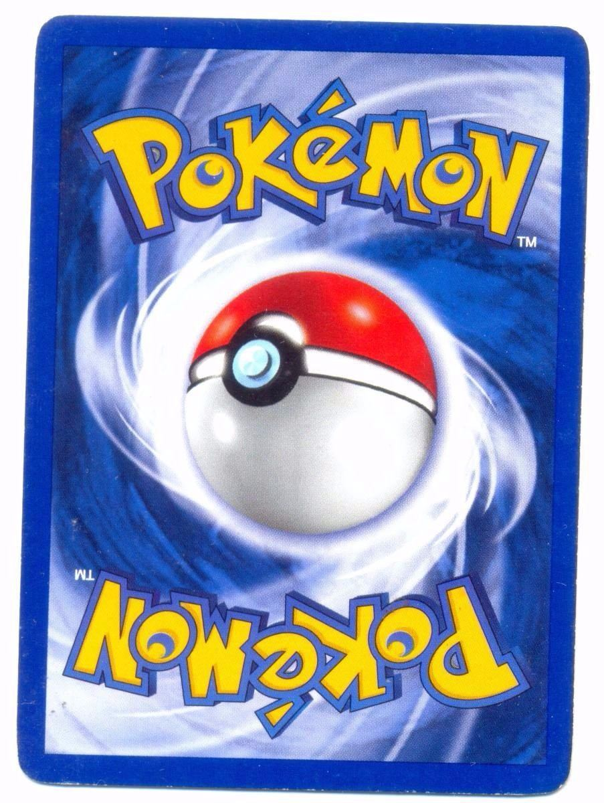
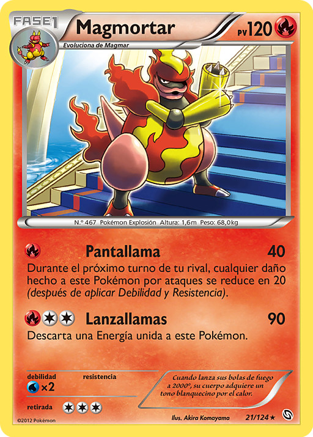
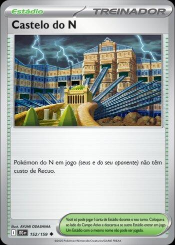
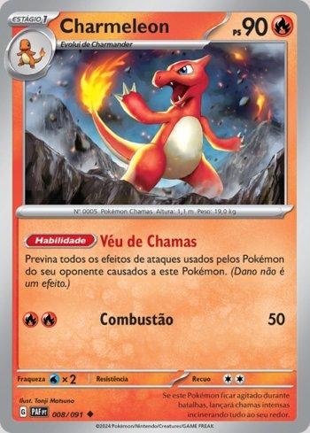

🎴 1. Componentes básicos do jogo
Você precisa de:
Um baralho de 60 cartas (não pode ter mais de 4 cópias da mesma carta com o mesmo nome).

Cartas podem ser de três tipos:
Pokémon

Energia

Treinador

Marcadores de dano e possivelmente moedas ou dado.
Tapete de jogo (opcional, mas ajuda bastante).
🧑🤝🧑 2. Objetivo do jogo Vença seu oponente pegando 6 cartas de prêmio. Você pega uma carta de prêmio cada vez que derrota um Pokémon do oponente.
🔁 3. Preparação inicial
1. Embaralhe seu baralho.
2. Compre 7 cartas.
3. Coloque um Pokémon básico como Pokémon Ativo (frente do campo).
4. Você pode colocar até 5 Pokémon básicos no Banco (parte de trás do campo).
5. Coloque 6 cartas viradas para baixo como cartas de prêmio.
6. Decida quem começa com cara ou coroa (moeda ou dado).
⚔️ 4. Começo do turno
Cada jogador faz isso no seu turno:
Fase 1: Comprar carta
Compre 1 carta do topo do baralho.
Fase 2: Fase de preparação
Você pode:
Colocar um Pokémon básico no Banco.
Evoluir um Pokémon (se já estava em jogo no turno anterior).

Anexar 1 carta de energia (uma por turno).
Usar cartas de treinador (itens, apoiadores, estádios).
Recuar seu Pokémon Ativo (gastar energia e trocá-lo com um do Banco).
Fase 3: Ataque
Use um ataque do seu Pokémon Ativo, se tiver energia suficiente.
Causar dano ao Pokémon Ativo do oponente.
Se o Pokémon adversário for nocauteado, você pega 1 carta de prêmio (ou 2 se for um Pokémon-ex).
🔄 5. Fim do turno
Depois de atacar, o turno passa para o oponente.
☠️ 6. Nocaute
Um Pokémon é nocauteado se tiver dano igual ou maior que sua vida (HP).
Vai para a pilha de descarte.
O oponente pega uma carta de prêmio.
🏆 7. Como vencer
Você vence se:
Pegar as 6 cartas de prêmio;
O oponente não tiver Pokémon no campo ao final do seu turno;
O oponente não puder comprar carta no início do turno (baralho vazio).
📌 Dicas úteis para iniciantes
Comece com baralhos temáticos ou prontos (ex: baralhos iniciais).
Preste atenção nos tipos de energia e evolução.
Controle bem o uso de cartas de treinador.
Treine com alguém ou jogue no Pokémon TCG Live (versão digital gratuita).
um deck de cartas Pokémon competitivo ou casual exige estratégia.
Um bom deck tem um equilíbrio entre Pokémon, Energias e Cartas de Treinador.
Vou te explicar passo a passo como montar um deck de 60 cartas.
🎴 1. Estrutura básica de um deck
Um deck deve conter exatamente 60 cartas e pode ter, no máximo, 4 cópias de qualquer carta com o mesmo nome (exceto cartas de energia básica).
A distribuição recomendada é:
✅ 16 a 20 Pokémon
✅ 25 a 30 Cartas de Treinador
✅ 10 a 15 Cartas de Energia
Essa estrutura pode variar dependendo da sua estratégia.
🏆 2. Escolha sua estratégia e tipo de deck
Antes de escolher as cartas, defina como seu deck vai funcionar. Aqui estão os principais tipos de estratégia:
Decks ofensivos – Focam em ataques poderosos e nocautes rápidos.
Decks de controle – Usam habilidades e cartas de treinador para limitar as ações do oponente.
Decks de defesa – Utilizam cura e resistência para durar mais turnos.
Decks de combinação – Trazem combos entre habilidades e cartas para maximizar o efeito.
🔥 3. Escolha seus Pokémon principais
Seu deck precisa de um Pokémon forte para ser o centro da estratégia. Considere:
Pokémon básicos poderosos (ex: Pokémon EX).
Pokémon de evolução (se for usar evolução, tenha pelo menos 3 cópias da fase básica).
Pokémon de suporte (que têm habilidades para acelerar energia ou comprar cartas).
🔹 Exemplo de distribuição:
3 a 4 Pokémon principais (Pokémon EX ou Evolutivos)
4 a 6 Pokémon básicos para suporte
2 a 3 Pokémon auxiliares para dar flexibilidade
🛠️ 4. Escolha as cartas de Treinador
As cartas de treinador ajudam a acelerar seu jogo. São divididas em:
1️⃣ Apoiadores – Fortes, mas só podem ser jogados uma vez por turno.
Exemplo: Professora Juniper (compra 7 cartas).
2️⃣ Itens – Podem ser jogados quantas vezes quiser por turno.
Exemplo: Ultra Ball (procura qualquer Pokémon no baralho).
3️⃣ Estádios – Alteram as regras do jogo enquanto estão em campo.
Exemplo: Praia Tropical (ajuda a comprar mais cartas).
🔹 Recomendação:
✅ 4 a 8 Apoiadores
✅ 10 a 15 Itens

✅ 2 a 4 Estádios

⚡ 5. Escolha a quantidade certa de energias
A energia é essencial para que os Pokémon possam atacar.
Decks de Pokémon EX podem precisar de menos energias porque há cartas que aceleram esse recurso.
Decks com Pokémon de evolução geralmente precisam de mais energias.
Decks de múltiplos tipos precisam de energias de diferentes cores ou cartas especiais como Energia Arco-Íris.
🔹 Recomendações:
✅ 10 a 12 Energias em decks com muita aceleração de energia.
✅ 12 a 15 Energias em decks mais lentos.
🔄 6. Teste, ajuste e melhore seu deck
Depois de montar seu deck, jogue partidas para ver se ele está funcionando bem. Algumas dicas para testar e melhorar:
✔️ Simule partidas sozinho para ver se as cartas aparecem na ordem correta.
✔️ Jogue contra amigos ou no Pokémon TCG Live.
✔️ Faça ajustes: Se as cartas não estão funcionando bem, troque por outras.
🎯 Exemplo de deck competitivo (Deck de Charizard EX)
3 Charizard ex

3 Charmeleon

4 Charmander

2 Pidgeot ex

2 Pidgeotto
3 Pidgey
3 Moltres
4 Kissera
2 Arven
2 Ordem da Chefia (Ghetsis)
2 Pesquisa de Professores (Profª Arka)
2 Artazon
4 Poffin de Colega
4 Doce Raro
4 Ultra Bola
1 Pegador Superior
1 Supervara
1 Substituição
2 Máquina Técnica: Evolução
1 Faixa de Desafio
10 Energia Básica de Fogo